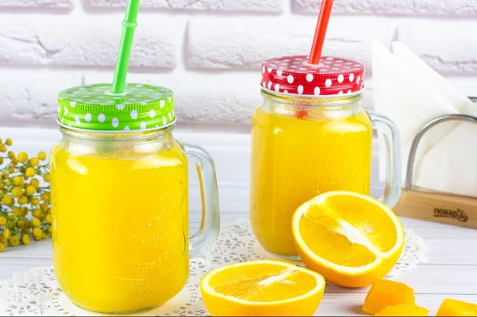

Succhi
Le migliori ricette di succhi a casa. Non c'è niente di complicato in cucina e le ricette qui sotto ti aiuteranno ad assicurartene.
Succo di zucca
Il succo di zucca fatto in casa è abbastanza facile da preparare. È meglio, ovviamente, usare uno spremiagrumi a coclea, in modo che la bevanda mantenga meglio le sue qualità medicinali.

Succo di zucca con arancia
Succo luminoso, gustoso e molto salutare! Un vero serbatoio di vitamine, così necessario nella stagione fredda. Il succo può essere preparato e bevuto subito o preparato per l'inverno.

Succo di zucchine
Puoi fare una dieta e succhi sani con le zucchine, che contengono una grande quantità di vitamine e minerali. Inoltre, ha un buon sapore.